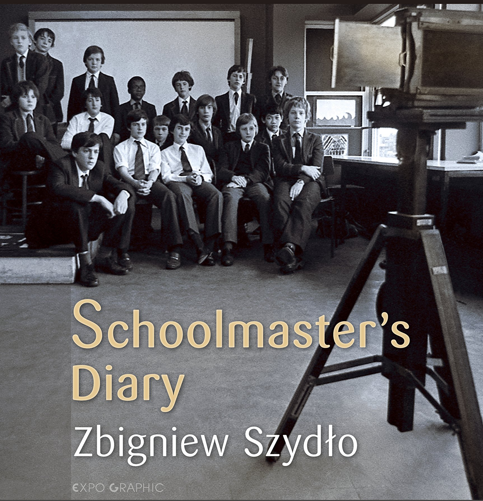
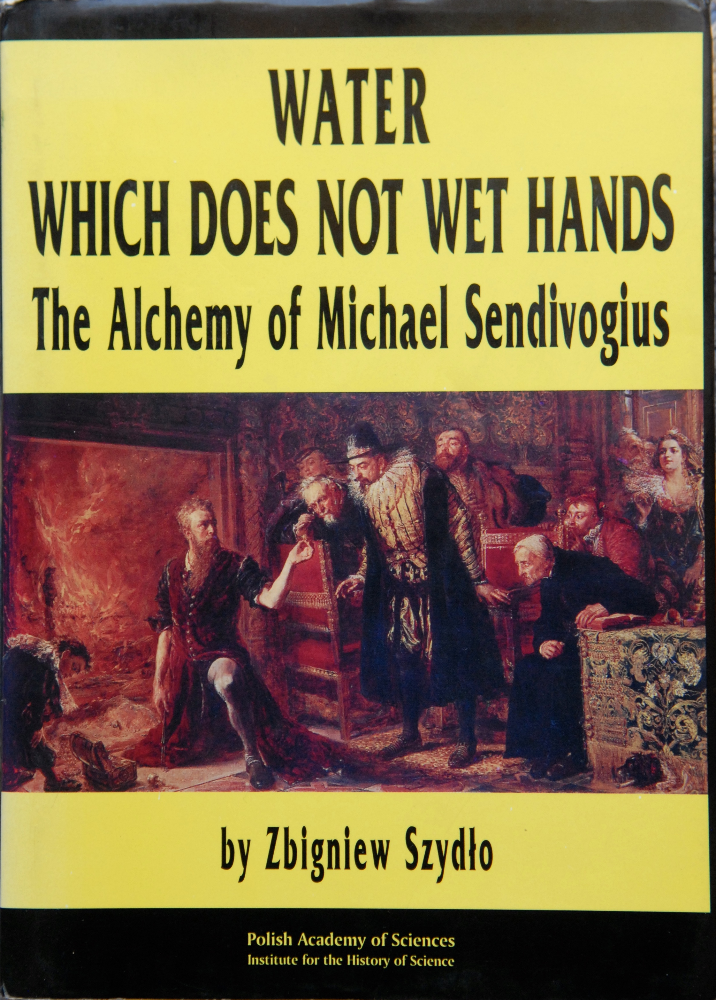

My first article appeared in print, in a Polish Sunday newspaper (Gazeta Niedzielna) on my 17th birthday. Its title was: “Wrażenia z pierwszej pracy” (Impressions from my first job). Since then, I have published over 100 articles on a wide variety of topics, in a wide variety of magazines, scholarly journals and newspapers. I have also written two books: Water which does not wet hands – The alchemy of Michael Sendivogius with a foreword by Professor Lord George Porter, FRS , (Nobel Prize winner for Chemistry, 1967), Polish Academy of Sciences, Warszawa, 1994, 300pp., and Schoolmaster’s Diary, Expographic, Kraków, 2015, 96pp. A third book, School Tales, is in the process of being written. It will be illustrated with photographs and my own drawings.
Books
Reviewed in:
Daily Mail, Metro, The Mirror, Ham & HighAvailable to buy Here
Available to buy Here
Articles
For a list of selected articles click here
For children
-
I love Paris in the springtime - Click here for a video
The Cholmeleian, (Highgate School's magazine), Summer 1979
- To Poland in a Triumph (2012)
-
Hair-raising Herald adventures (2008)
Club Torque, Triumph owners magazine.
- The Centenary of the pH Scale (2009)
- Chemical ladies (2011)
- Science Education in the Future (2012)
-
New Forest Adventures (2012)
The above four were published in Sciencegate, (Highgate School's Science magazine)
- A New Light on Alchemy (History Today, 1997)
- Teaching experimental chemistry in English schools (2012)
- An essay to commemorate the 150th anniversary of Michael Faraday's death (2017)
- Two English Chemists (2018)
{kind=link}
History of Science and Chemistry Education
The following two articles raise fundamental questions about the teaching of chemistry